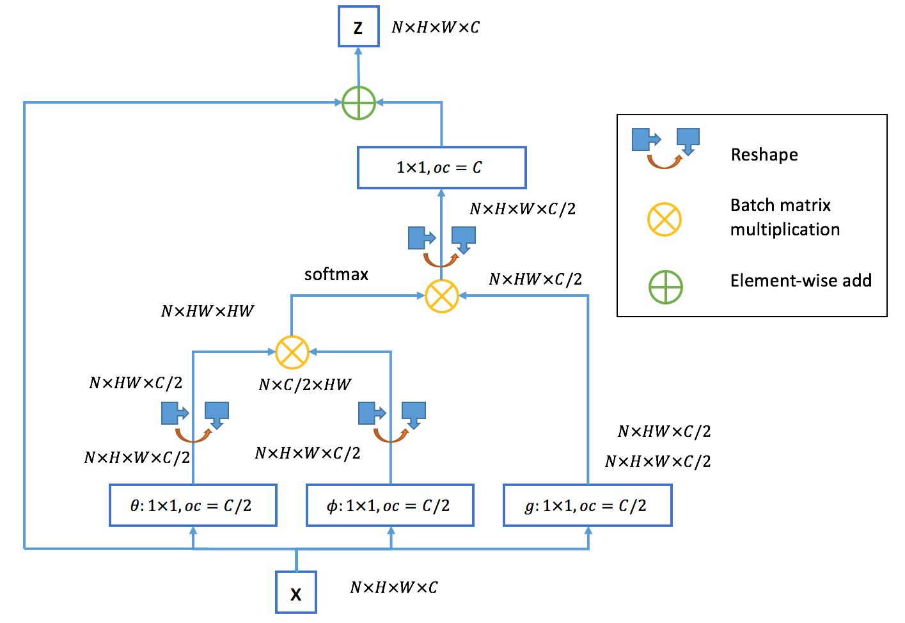

论文阅读：Non-local Neural Networks
Local & Non-local
Local这个词主要是针对感受野(receptive field)来说的。以卷积操作为例，它的感受野大小就是卷积核大小，而我们一般都选用3*3，5*5之类的卷积核，它们只考虑局部区域，因此都是local的运算。同理，池化(Pooling)也是。相反的，non-local指的就是感受野可以很大，而不是一个局部领域。
那我们碰到过什么non-local的操作吗？有的，全连接就是non-local的，而且是global的。但是全连接带来了大量的参数，给优化带来困难。这也是深度学习(主要指卷积神经网络)近年来流行的原因，考虑局部区域，参数大大减少了，能够训得动了。
那我们为什么还需要non-local？
我们知道，卷积层的堆叠可以增大感受野，但是如果看特定层的卷积核在原图上的感受野，它毕竟是有限的。这是local运算不能避免的。然而有些任务，它们可能需要原图上更多的信息，比如attention。如果在某些层能够引入全局的信息，就能很好地解决local操作无法看清全局的情况，为后面的层带去更丰富的信息。
公式
A generic non-local operation in deep neural networks.
$$
y_i=\frac{1}{\mathcal{C}(x)}\sum\limits_{\forall j}f(x_i,x_j)g(x_j)
$$
这里 $i$ 是输出位置的索引，$j$ 是所有可能的位置。$x$ 是输入信号，$y$ 是和 $x$ 具有相同大小的输出信号。$f(\cdot)$ 计算 $i$ 和所有 $j$ 之间的相关性。一元函数 $g(\cdot)$ 计算位置 $j$ 作为输入信号的表示。最后的输出由 $\mathcal{C}(x)$ normalize。
实例
Gaussian
$$
f(x_i,x_j)=exp(x_i^Tx_j)
$$
这里 $x_i^Tx_j$ 是点乘相似度。规范化因子 $\mathcal{C}(x)=\sum_{\forall j}f(x_i,x_j)$。
$$
y_i=\frac{1}{\sum_{\forall j}f(x_i,x_j)}\sum\limits_{\forall j}exp(x_i^Tx_j)g(x_j)
$$
Embedded Gaussian
Gaussian 公式的扩展，在嵌入空间 (embedding space) 中计算相似度。
$$
f(x_i,x_j)=exp(\theta(x_i)^T\phi(x_j))
$$
其中 $\theta(x_i)=W_\theta x_i$，$\phi(x_j)=W_\phi x_j$。规范化因子 $\mathcal{C}(x)=\sum_{\forall j}f(x_i,x_j)$。
$$
y_i=\frac{1}{\sum_{\forall j}f(x_i,x_j)}\sum\limits_{\forall j}exp(\theta(x_i)^T\phi(x_j))g(x_j)
$$
self-attention 可以视为该公式的扩展，$\frac{1}{\mathcal{C}(x)}f(x_i,x_j)$ 变为 $j$ 维的 softmax 计算：
$$
y=softmax(x^TW^T_\theta W_\phi x)g(x)
$$
Dot product
$$
f(x_i,x_j)=\theta(x_i)^T\phi(x_j)
$$
规范化因子 $\mathcal{C}(x)=N$。$N$ 是 x 的维度而不是 $f(\cdot)$ 的和。
这种计算方法简化了梯度计算。
A normalization like this is necessary because the input can have variable size.
因为这样，输入可以有一个可变的大小，这种规范化是必要的。
$$
y=\frac{1}{N}\sum\limits_{\forall j}(\theta(x_i)^T\phi(x_j))g(x_j)
$$
Concatenation
$$
f(x_i,x_j)=\text{ReLU}(\textbf{w}_f^T[\theta(x_i),\phi(x_j)])
$$
这里 $[\cdot,\cdot]$ 表示 concatenation，$\textbf{w}f$ 是把连接向量映射成标量的权重向量。规范化因子 $\mathcal{C}(x)=N$。
$$
y=\frac{1}{N}\sum\limits{\forall j}(\text{ReLU}(\textbf{w}_f^T[\theta(x_i),\phi(x_j)]))g(x_j)
$$
- 后两种选择的归一化系数$\mathcal{C}(x)$选择为$x$的点数，只是为了简化计算，同时，还能保证对任意尺寸的输入，不会产生数值上的尺度伸缩。
- Embedding的实现方式，以图像为例，在文章中都采用1*1的卷积，也就是 $\theta$ 和 $\phi$ 都是卷积操作。
为了能让non-local操作作为一个组件，可以直接插入任意的神经网络中，作者把non-local设计成residual block的形式，让non-local操作去学x的residual：
$$
\textbf{z}_i=W_z \textbf{y}_i+\textbf{x}_i
$$
$W_z$ 实际上是一个卷积操作，它的输出 channel 和 $\textbf{x}$ 一致。这样一来，non-local 操作就可以作为一个组件，组装到任意卷积神经网络中。
具体实现
$f(\cdot)$ 的计算其实是相似性计算，可以转化成矩阵运算。整个 non-local 运算可以化为矩阵乘法运算 + 卷积运算，如图所示，其中 oc 为 output_channels。
原文考虑的是T帧的视频为例，这里以一个batch的图像、$f(\cdot)$选为embedded Gaussian为例，对于其他形式的相似性度量，可以类似地化为矩阵操作。N 是 batchsize，H,W 是高和宽，C 是 channel。
左边 softmax 之前的部分都是为了计算相似度，右边卷积计算之后直接和相似度进行相乘。
Relations
与全连接层的联系
- 全连接层的权重在输入与输出之间，而 non-local 计算的是输入层之间的相互关系。
- g是identity函数，$g(x_i)=x_i$。
- 归一化系数为1。归一化系数跟输入无关，全连接层不能处理任意尺寸的输入。
与 Self-attention 的联系
Embedding 的 1*1 卷积操作可以看成矩阵乘法。
$$
\begin{aligned}
\theta(x_i)=W_\theta\cdot x_i &\Longrightarrow \theta(x)=W_\theta\cdot x\
\phi(x_j)=W_\phi\cdot x_j &\Longrightarrow \phi(x)=W_\phi\cdot x
\end{aligned}
$$
所以
$$
y=softmax(x^TW^T_\theta W_\phi x)g(x)
$$